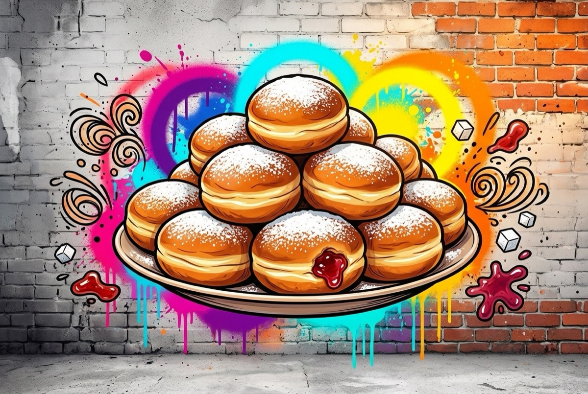

סופגניות
התפחה כ-2½ שעות · שמן 160–170 מעלות · כ-16 סופגניות
🌱 פרווהבצק
- 500 גרם קמח
- 1 כף שמרים יבשים
- ¼ כוס סוכר
- 1 כפית מלח
- ¼ כוס שמן
- 2 ביצים
- ½ כפית תמצית וניל
- ¾ כוס מים
- 1 כף ערק, ברנדי או וודקה
מילוי, טיגון וגימור
- כ-300 גרם ריבת תות
- 1–2 ליטר שמן לטיגון
- אבקת סוכר
- קמח לקימוח
ציוד
- מיקסר עם וו לישה
- קורץ עגול בקוטר 7 ס"מ
- בקבוק לחיץ או שק זילוף עם פומית דקה
- קשית או עיפרון
אופן ההכנה
- מנפים את הקמח לקערת המיקסר. מוסיפים שמרים, סוכר ומלח ומערבבים קצרות במהירות נמוכה.
- מוסיפים שמן, ביצים, וניל ומים ולשים כ-10 דקות במהירות נמוכה.
- מוסיפים את האלכוהול ולשים עוד 2 דקות. הבצק רך מאוד ומעט דביק.
- מעבירים לקערה משומנת, מכסים בניילון נצמד ומתפיחים 1½–2 שעות, עד שהנפח מוכפל.
- מקמחים היטב משטח עבודה ומרדדים את הבצק לעובי 1.5–2 ס"מ.
- קורצים עיגולים בקוטר 7 ס"מ (טובלים את הקורץ בקמח בין חיתוך לחיתוך) ומניחים על מגש מקומח, במרווחים.
- אוספים את השאריות לכדור, מכסים, נותנים 5 דקות מנוחה, ומרדדים וקורצים שוב.
- מקמחים קלות מלמעלה, מכסים במגבת ומתפיחים כ-40 דקות.
- בינתיים ממלאים את הבקבוק הלחיץ בריבה (מסננים אם יש חתיכות פרי גדולות).
- מחממים את השמן בסיר בינוני על אש בינונית, לחום 160–170 מעלות. בדיקה: כף עץ הפוכה בשמן מעלה בועות קטנות סביבה.
- מורידים כל עיגול בעדינות לשמן, הצד המקומח למטה. מטגנים 1½–2 דקות לכל צד, עד הזהבה. נשארים על אש בינונית לאורך כל הטיגון.
- מסננים על מגש עם נייר סופג.
- פותחים תעלה בכל סופגנייה עם קשית או עיפרון וממלאים בריבה עד שהיא מציצה החוצה.
- מפזרים אבקת סוכר רק אחרי שהסופגניות התקררו לגמרי.
הערות
- לא לוותר על האלכוהול: הוא מתאדה בשמן ועוזר לסופגניות להיות אווריריות ולספוג פחות שמן. יין לא מתאים במקומו.
- שמן חם מדי ישחים את הסופגניות מבחוץ לפני שהן נאפות מבפנים.
- ריבה קשה? מחממים את הבקבוק כמה שניות במיקרוגל.
- להקפאה: מקפיאים בלי אבקת סוכר, ומפזרים אחרי ההפשרה.
מקור: חן במטבח